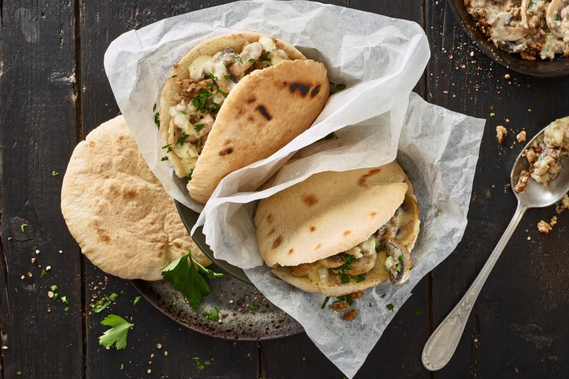

Zurich pita pockets

Description
Discover a taste sensation with this Pita Pocket recipe! Soft pitas
embrace a variety of savory fillings, creating a satisfying meal or snack
bursting with Mediterranean flavors.
Quick to make and delightful to devour, Pita Pockets are perfect for any
occasion!
Ingredients
- 2 tsb clarified butter
- 200 g vegetarian strips
- 1 onion, finely chopped
- 100g mushrooms, sliced
- 1 ½ tbsp white flour
- ½ dl white wine
- 2 dl cream
- 6 mini pitas
Steps
- Heat 1 tbsp of clarified butter in a non-stick frying pan.
-
Add the thin slices of meat and fry, turning occasionally, for approx. 4
mins., then remove and set aside.
-
Reduce the heat, add the white wine and allow to reduce to half the
amount before adding the cream.
- Season with salt and pepper.
- Add the slices of veggie strips or meat and heat gently.
-
Slice the pitta breads, heat in the microwave (20 seconds at 600W) and
fill them.